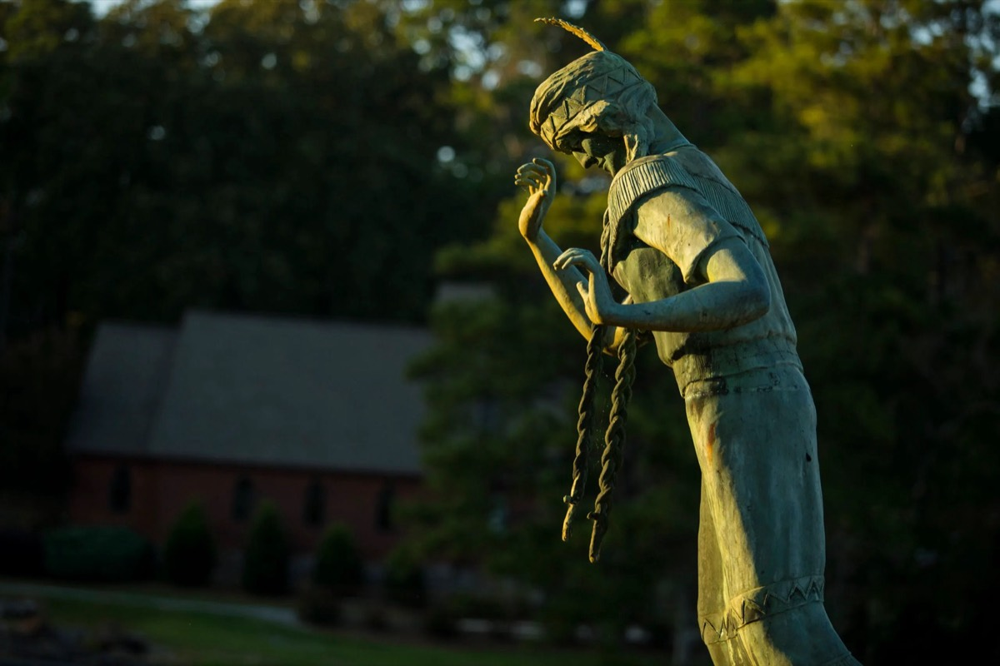

Say it "KNOCK-a-LOO-la"
Before it was a park, it was Black Creek Falls
The legend, as Mathilde Bilbro wrote it down, is of a chief's daughter promised to a rich suitor while her heart belonged to a young brave from her own tribe. On her wedding day she slipped away to the edge of the falls. Her father gave the cascade her name.
Gadsden bought the land from the R.E. Mitchell family in the 1940s and opened the park in 1953. The 9-foot bronze statue on the rim was paid for by Etowah County residents and unveiled on September 22, 1969.
1953park opens
1969statue unveiled
2,700 lbof bronze